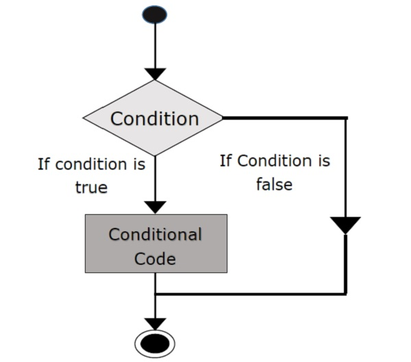

Technical ../Blogs - JavaScript Basics
How does JavaScript compare to HTML and CSS?
JavaScript is a scripting language that can be used together with HTML/CSS, but also utlized to do other things not related to the web. HTML provides the basic structure of sites, CSS is used to control presentation, formatting, layout, content and how it looks. JavaScript is used to define the interactive elements of a webpage that help to engage visitors to the site.
Explain control flow and loops using an example process.
As loop's are executed from top to bottom I will explain the process I am going to create a simple if, else loop while explaining the control flow process in the form of step by step instructions.
Step 1:
Create a simple function called true or false with a value of isItTrue(condtion) with a set of brackets and curly braces.
Step 2:
Next, create a function called trueOrFalse which will return a value of isItTrue,
Step 3:
Create an if statement inside the function to return Then using an if statement. This statement will use a function and loop to return a boolean condition.
Step 4:
The keyword if tells JavaScript to execute the code in the curly braces under certain conditions, defined in the parentheses. When the condition evaluates to true and (isItTrue equals 1), the program executes the statement inside the curly braces.
Step 5:
Now create an else if statement with JavaScript to execute the code in the curly braces under certain conditions, defined in the parentheses. When the Boolean condition evaluates to false, the statement inside the curly braces will not execute.
Step 6:
Finally create a else with a new set of curly braces. When the Boolean condition evaluates to false, the statement inside the curly braces will not execute true or false it will return a statement of "Not true or false." When the Boolean condition evaluates to false, the statement inside the curly braces will execute.
Your final example should look something like this.
function trueOfFalse(isItTrue) { if (isItTrue = 1) { return "True"; } else if (isItTrue = 2) { return "False"; } else { return "Not true or false"; } }Explain the difference between accessing data from arrays and objects.
JavaScript arrays are best described as a set of variables also known as a special type of objects. Arrays use numbers to access its elements using a single variable name combined with an index number. The real strength of JavaScript arrays are the built-in array properties and methodd and arrays can have or use objects, functions and also other arrays. JavaScript objects, as I understand it share many of the same attributes and behave in a much similar way to ordinary objects. Javascript variables which can also be objects. Properties inside JavaScript objects can also be accessed or set using a bracket notation.
Explain what functions are and why they are useful.
Functions are used as a value for various properties, the most obvious is reusability because once a function is defined, it can be used over and over again. A function can be invoked many times in a program. Another aspect of reusability is that a single function can be used in several different programs. Another useful reason is abstraction, because to create or use any function you need to create the name of the function, work out what the function will do. Also work out What arguments you must give to the function and what result the function will return.